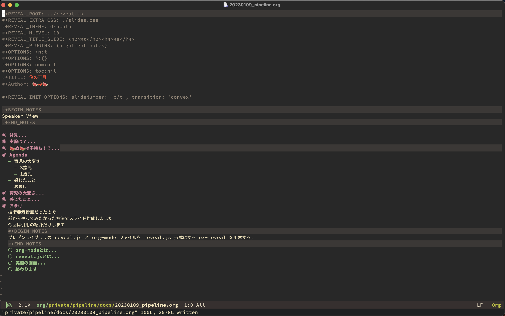

俺の正月
🍉ぬ🍉
背景
連休だしなにかやってみるぞー！
- Webアプリケーションに対する脆弱性診断
- セキュリティは興味あるので
- セキュリティは興味あるので
- dotfilesの整理
- vimrcとzshrcは特にぐちゃぐちゃ
- vimrcとzshrcは特にぐちゃぐちゃ
- DNSの勉強
- 仕事で触れるので
- 仕事で触れるので
実際は？
子守りをしていました😇
🍉ぬ🍉は子持ち！？
妹の子供です
3歳と1歳の女の子


Agenda
- 育児の大変さ
- 3歳児
- 1歳児
- 3歳児
- 感じたこと
- おまけ
育児の大変さ
1歳児
- 泣き叫ぶ
- うんちしてる
- ミルクがほしい
- 構ってほしい
- うんちしてる
- 常にそばにいる必要がある
- 危ない所に移動しようとしているかも？
- 危ない物を食べようとしているかも？
- 危ない所に移動しようとしているかも？
3歳児
- 泣き叫ぶ
- 対話が多少できるようになるので厄介
- 自分の意思が通らないと号泣
- 対話が多少できるようになるので厄介
- 暴れ回る
- 同じことに永遠と付き合わされる
- 同じことに永遠と付き合わされる
泣いてます

感じたこと
- 想像以上に自由がない
- 子育てする人の気持ちが少し分かった
- 子育てする人の気持ちが少し分かった
- 公共の場は怖い
- 基本的に何をやらかすかわからない
- 電車移動では緊急用のボタンを押そうとした
- 基本的に何をやらかすかわからない
- 車運転できるようになりたい
- 公共の交通機関は怖いので
- 公共の交通機関は怖いので
おまけ
技術要素皆無だったので
前からやってみたかった方法でスライド作成しました
今回は引用の紹介だけします
org-modeとは
Emacsの拡張可能なメジャーモード
org-modeは、様々な機能をサポートしています。
メモを取ることから、タスクリストの管理、プロジェクトの管理、
文書の編集、再現性のある計算ノート、文芸的プログラミングなどです。
これらを高速で効率的なプレーンテキストシステムで実現しています。
reveal.jsとは
reveal.js is an open source HTML presentation framework.
It’s a tool that enables anyone with a web browser to create fully-featured and beautiful presentations for free.
実際の画面
